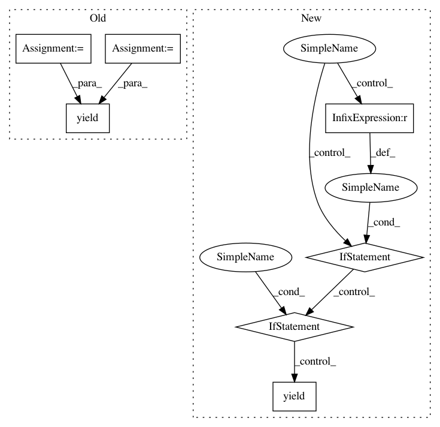

5a68c464caac68e4623f9a7b173bcf24aa719a5c,tensorflow_datasets/text/trivia_qa.py,TriviaQA,_generate_examples,#TriviaQA#Any#Any#Any#,230
Before Change
["Description", "Filename", "Rank", "Title", "Url",
"SearchContext"])
entity_pages = _transpose_and_strip_dicts(
_add_context(
article.get("EntityPages", []), "WikiContext", wiki_dir),
["DocSource", "Filename", "Title", "WikiContext"])
question = article["Question"].strip()
question_id = article["QuestionId"]
question_source = article["QuestionSource"].strip()
yield "%s_%s" % (os.path.basename(filepath), question_id), {
"entity_pages": entity_pages,
"search_results": search_results,
"question": question,
"question_id": question_id,
"question_source": question_source,
"answer": answer_dict,
}
After Change
with tf.io.gfile.GFile(filepath) as f:
current_record = ""
for line in f:
if line == " {\n":
current_record = line
elif line.startswith(" }"): // Handles final record as well.
article = json.loads(current_record + "}")
current_record = ""
example = parse_example(article)
yield "%s_%s" % (fname, example["question_id"]), example
else:
current_record += line
In pattern: SUPERPATTERN
Frequency: 3
Non-data size: 7
Instances
Project Name: tensorflow/datasets
Commit Name: 5a68c464caac68e4623f9a7b173bcf24aa719a5c
Time: 2019-12-06
Author: adarob@google.com
File Name: tensorflow_datasets/text/trivia_qa.py
Class Name: TriviaQA
Method Name: _generate_examples
Project Name: SeldonIO/seldon-core
Commit Name: d78331c9f66c47abeb806f2e409cdb442b2c02be
Time: 2020-03-23
Author: r.j.skolasinski@gmail.com
File Name: python/seldon_core/metrics.py
Class Name: SeldonMetrics
Method Name: collect
Project Name: shibing624/pycorrector
Commit Name: 4e144c9f842d7415d8be5bdbb5912d88ae32cced
Time: 2018-04-16
Author: 507153809@qq.com
File Name: pycorrector/seq2seq/corpus_reader.py
Class Name: CGEDReader
Method Name: read_tokens